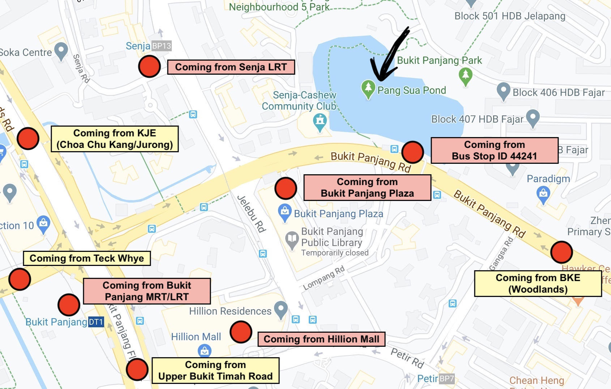

How To Get There
By Bus 🚌
The nearest bus stop is "Opp Lompang Rd" Bus Stop ID: 44241. It stops exactly where Pang Sua Pond is so you don't have to walk an extra distance to get there.
The buses that stop there are: 184, 187, 190, 700, 700A, 970, 973.
By LRT 🚝
The nearest LRT station is Senja LRT. It would take about 13 minutes to walk 850m to get there.
If You Are Driving
Unfortunately, there is no parking specifically for Pang Sua Pond. You can park at the residence nearby (Block 542-545) or at Bukit Panjang Plaza.
Click on this interactive image of the map to see how long it would take to get to Pang Sua Pond from different places!
Image taken from Google Maps.
Here's a Google Map location of it for you to search how to get there from your location.